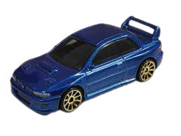

The '98 Subaru Impreza 22B STI-Version is a scale representation of the limited-production 22B version of Subaru's Impreza WRX STi. The 22B STi remains one of the most sought-after Subaru models, as a World Rally Icon and as a symbol of Subaru's prowess as a maker of boxer engines and All-Wheel Drive cars.
The Subaru Impreza 22B STI is a limited edition of just 400 units that were made for the Japanese market. It is the most famous and desired edition of the first Impreza and its prices usually reach very high figures. In the case of this copy, it was imported to the United States in 2020 and is unit number 156 of the limited series. It is finished in World Rally Blue with a black and blue interior.